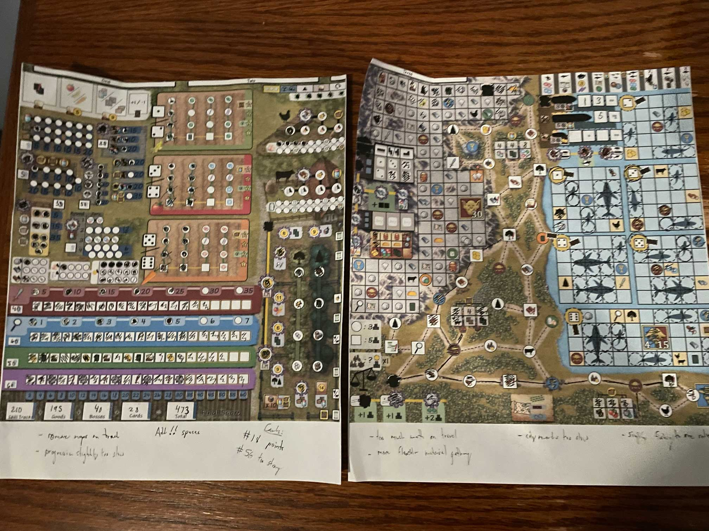

The Importance of Blind Playtesting
With each new milestone in your design journey, you learn something important about your game.
The first time your physical prototype hits the table, for example, you are often met with a moment of rediscovery that asks, "is this the game that has been bouncing around in my head for all this time?"
The completion of the first draft of your rulebook tests the logical structure of your design, and the first time you pitch to a publisher will tell you something about the marketability of what you’ve produced.
However, as valuable as these lessons are, it is only the blind playtest (the process of giving your materials over to another person to test without you present) that takes that same important something and converts it into absolute truth.
Allowing your game to speak for itself, in a room without you present, is how you truly come to know it.
Conducting Your Earliest Playtests:
As important as it is to step out of the way as the designer, the unguided methods of a blind playtest are best reserved for designs that have their legs beneath them–shaky or otherwise. Very early in your development process, there should be nothing blind about the playtests you conduct. As a designer with a budding project, it is essential that you attend to the needs of your playtesters.
The expectation for early prototypes is that you will be present designing and then redesigning the kinks that arise in the playtest, as often and as early as they reveal themselves. Your role in your early playtests will be to :
- Make on-the-fly rules adjustments
- Clarify nuances that were perhaps omitted in your teach
- Re-balance synergies or effects that are too strong or too weak to be interesting
- And, while it sounds a little crazy, you may even need to explain the fun of the game, as you see it, so that your testers can try to tap into the same vision you hold in your head
But, over time, as you receive feedback and observe the play patterns of testers, your game will slowly grow and evolve to the point where it will have the strength to stand tall all on its own. It is in this moment that the merits of the blind playtest can be fully leveraged.
Only when the parent lets go can the child truly grow.
What a scary moment!
It will feel vulnerable. It will feel risky. It will feel uncertain. But, when you are present with the testers in any capacity, the extent of your influence cannot be overstated. Even if you sit quietly in the corner and say nothing, simply sharing the room with playtesters is enough to distort the true play experience of your game into something unrecognizable from what is actually held within the pages of your rulebook.
Preparing For A Blind Playtest:
So, how do you know when your game is ready for blind playtesting?
If you check most or all of these boxes, I’d say your project is ready:
- How many times do players appeal to you for rules clarifications after your teach? How many times do they ask after playing the first round? Once per turn is clearly too much. A few times a round would be acceptable early in the game but perhaps signals a need for further refinement if occurring in the later rounds.
- Are players able to “sink” into the game enough to formulate long-term strategies? A better way to say this might be, “Are players able to naturally tap into desires about what they want to accomplish within the game?” This is probably the most important piece of the puzzle. It signals everything from balance, clarity, and coherence, all the way up to the idea of having fun within the established rules of your game.
- Are players paying attention to their respective positions in the game? Do they actually care about who is winning?
- When players look up rules in the rulebook, do they come away with quick and clean answers?
- Lastly, are players giving you meaningful feedback? Are they asking questions that interrogate the fun and less fun parts of the game?
Games that are not quite ready tend to elicit questions that come from a place of distance. What I mean by this is that the question doesn't stem from what it's like to play your game. Rather, players ask how to play your game.
For example, a playtester asking what certain icons mean, or what their options were to achieve a given goal within the game, aren’t poking at the heart of what makes your game fun. Healthier questions that signal deeper player engagement will concern game balance, branching strategies, or turn-to-turn efficiencies.
If your sessions exhibit some of these criteria (not all; you don’t need polish, perfection, or even a compelling experience to blind playtest), I would say that it’s a good time to take the leap.
Odds and Ends:
If possible, record the process. Take diligent notes, and ask the right questions. Everything from playability to balance is fair game and important to examine. Allow whatever arises most prominently during the test (and something always will), to inform your next best step in the design process.

The above picture illustrates my note taking process for a recent playtest I conducted of my own game Field And Fortune. On the bottom of the sheets I make notes each time I encounter something that doesn’t conform to the play experience I desire. Everything from card balance to mechanical redesign is recorded the moment I encounter a problem.
Your first blind playtest might fizzle—maybe even in the first round. In fact, I have tested many games where I could not complete a single turn. And you know what? That’s totally fine.
Sift through the aftermath of the fizzle with a fine tooth comb. Somewhere in the story of that fizzle is an answer waiting to be found.
Be open. Be patient. And, above all, be brave. Every missed playtest is a missed opportunity to make your game more fun!
← Back to Blog